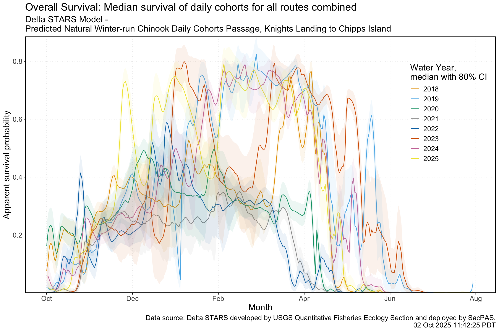
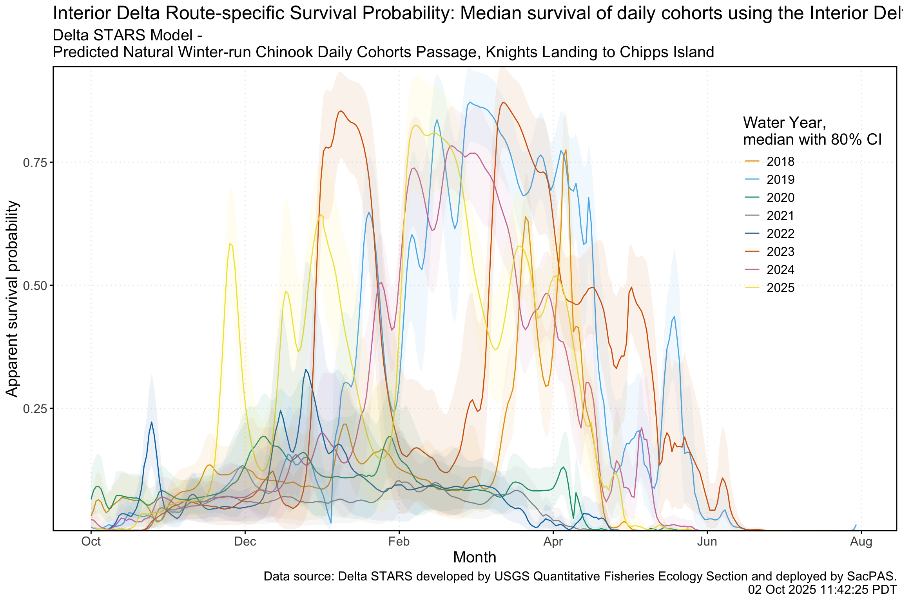
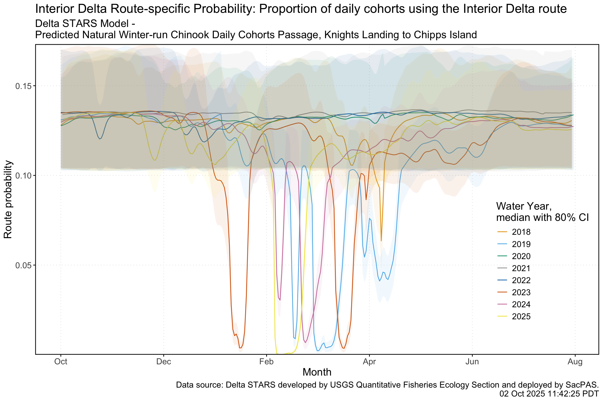
This document uses shared resources via BDO github from BOR to replicate figures requested and adjust underlying code to include dynamic data. See Track a cohort_Steelhead.docx for figures requested. Certain figures include a link to more interactive plot types using Shiny (in development) and all figures include a link to code in separate CBR developed github repo.
Note: Plots below use Winter-run Chinook as a surrogate for Steelhead
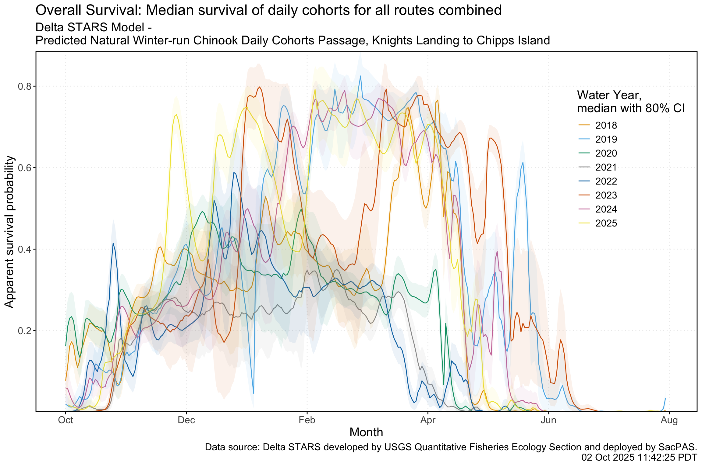
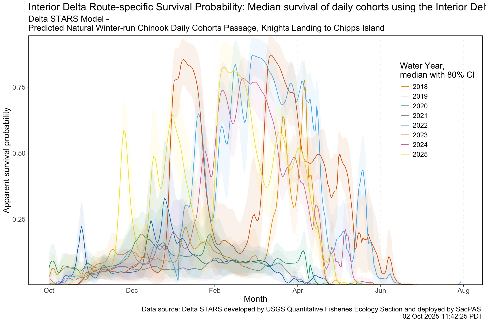
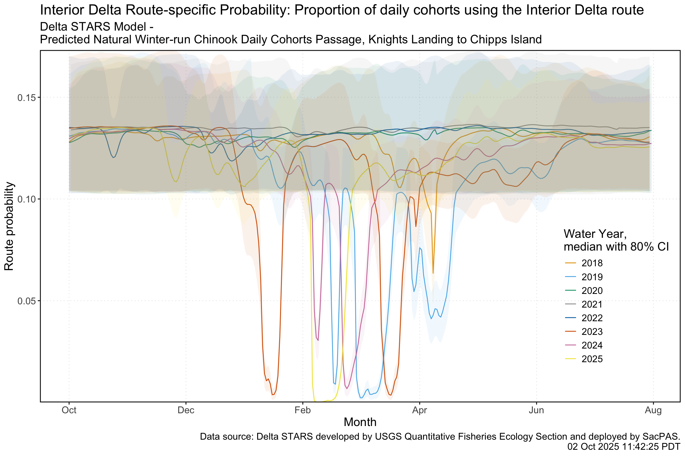
Related links: Interactive Plot, GitHub Repo Code, STARS ShinyApp
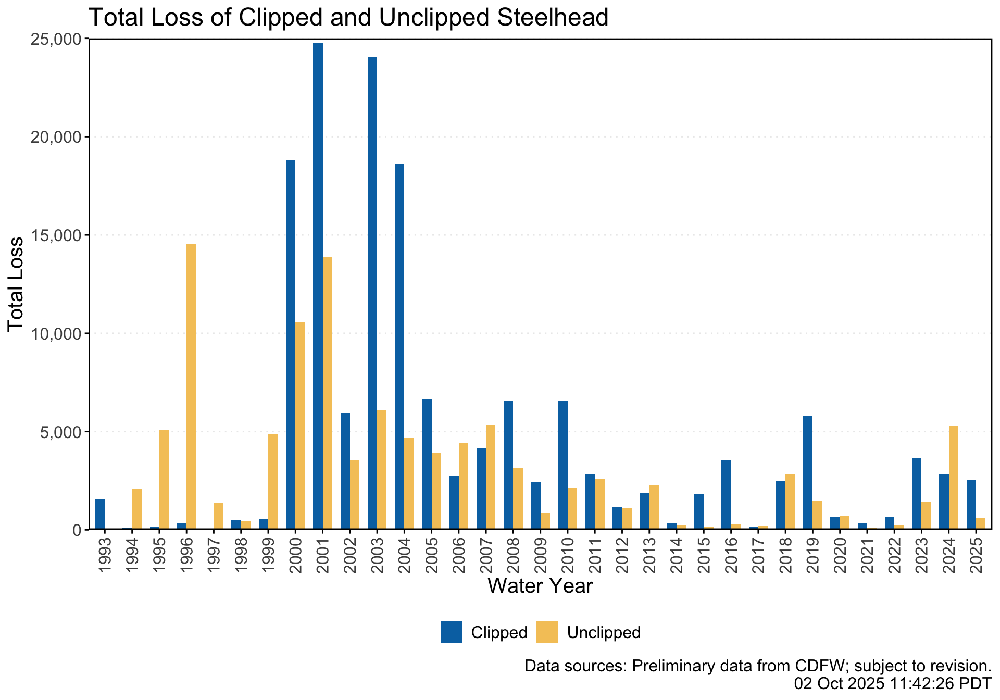
Related links: SacPAS Query, GitHub Repo Code
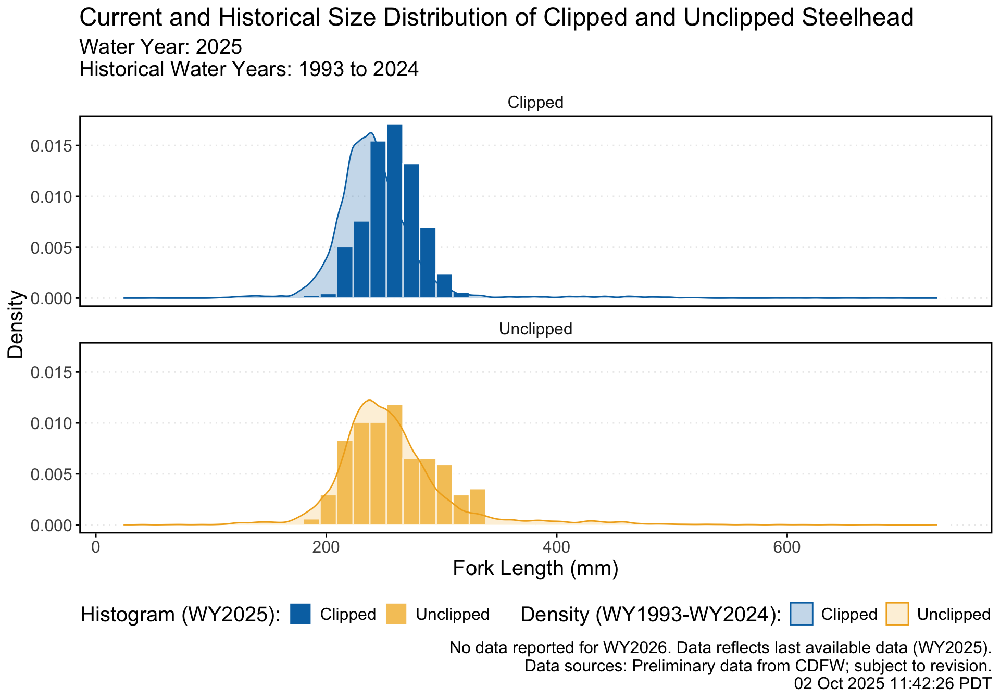
Related links: SacPAS Query, GitHub Repo Code
Related links: SacPAS Query, GitHub Repo Code
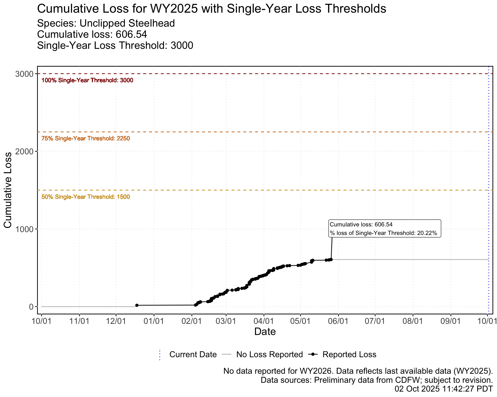
Related links: SacPAS Page, GitHub Repo Code
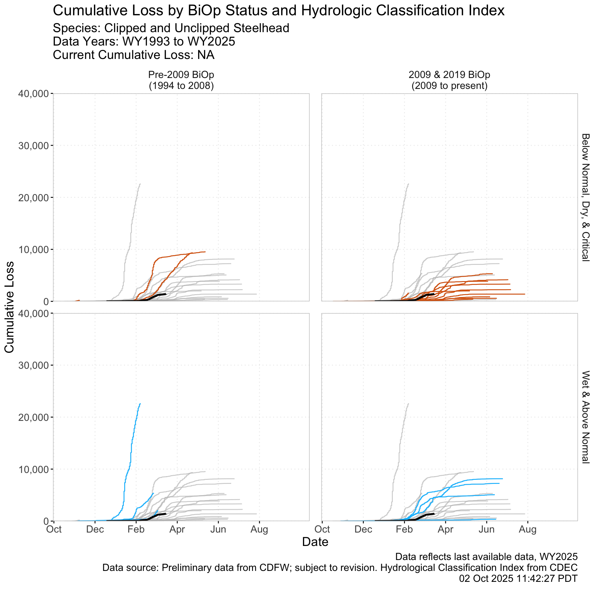
Related links: GitHub Repo Code

Related links: SacPAS, Interactive Plot - ShinyApp, GitHub Repo Code
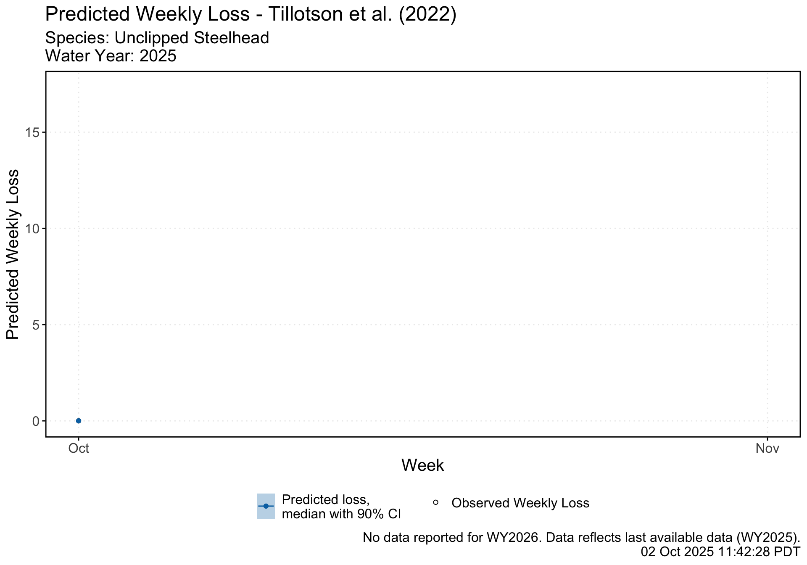
Related links: SacPAS Page, SacPAS Tillotson Tool, GitHub Repo Code: Tillotson model, data wrangling and prediction output, plot output
| Water year week | Date | Observed loss | OMR USGS tidally filtered | Export, SWP & CVP (CFS) | Avg flow at Sacramento (CFS) | Avg flow at San Joaquin (CFS) | Avg water temperature at Mallard Island (°C) | Weekly predicted loss (median, lower CI, upper CI) |
|---|---|---|---|---|---|---|---|---|
| 1 | 2024-10-01 | 0.00 | -10024.29 | 9727.00 | 15992.73 | 1263.04 | 20.85 | (0, 0, 17.32) |
| 2 | 2024-10-08 | 0.00 | -8362.86 | 8238.14 | 12356.02 | 1562.62 | 20.68 | (0, 0, 17.32) |
| 3 | 2024-10-15 | 0.00 | -6250.00 | 5441.86 | 9392.05 | 2005.51 | 19.32 | (0, 0, 0.14) |
| 4 | 2024-10-22 | 0.00 | -6314.29 | 6290.57 | 8970.69 | 2177.52 | 18.09 | (0, 0, 0) |
| 5 | 2024-10-29 | 0.00 | -5897.14 | 5831.71 | 8494.93 | 2252.46 | 16.71 | (0, 0, 0) |
| 6 | 2024-11-05 | 0.00 | -4895.71 | 5188.29 | 9053.90 | 1654.46 | 15.21 | (0, 0, 0) |
| 7 | 2024-11-12 | 0.00 | -5171.43 | 4559.14 | 8796.73 | 1347.61 | 14.12 | (0, 0, 0) |
| 8 | 2024-11-19 | 0.00 | -6882.86 | 7403.86 | 24193.14 | 1343.17 | 12.83 | (0, 0, 61.48) |
| 9 | 2024-11-26 | 0.00 | -9957.14 | 10357.00 | 44642.56 | 1360.21 | 11.55 | (0, 0, 120.48) |
| 10 | 2024-12-03 | 0.00 | -9435.71 | 10473.43 | 20458.63 | 1322.55 | 11.22 | (0, 0, 25.98) |
| 11 | 2024-12-10 | 0.00 | -10408.57 | 10346.86 | 20807.78 | 1323.45 | 10.51 | (0, 0, 51.96) |
| 12 | 2024-12-17 | 17.32 | -4908.57 | 4604.71 | 43255.73 | 1270.92 | 10.09 | (0, 0, 112.27) |
| 13 | 2024-12-24 | 0.00 | -2878.29 | 2359.71 | 41792.72 | 1337.78 | 10.61 | (0, 0, 99.09) |
| 14 | 2024-12-31 | 0.00 | -4750.00 | 4750.14 | 51635.79 | 1345.96 | 11.01 | (0, 0, 119.17) |
| 15 | 2025-01-07 | 0.00 | -6061.43 | 5874.00 | 44062.58 | 1321.61 | 10.38 | (3.4, 0, 147.51) |
| 16 | 2025-01-14 | 0.00 | -4684.29 | 4715.43 | 30632.04 | 1283.36 | 9.85 | (5.44, 0, 99.59) |
| 17 | 2025-01-21 | 0.00 | -4401.43 | 4389.43 | 19980.79 | 1188.87 | 9.68 | (2.72, 0, 69.7) |
| 18 | 2025-01-28 | 0.00 | -6065.71 | 6109.14 | 25488.15 | 1180.75 | 9.64 | (13.76, 0, 219.83) |
| 19 | 2025-02-04 | 43.91 | -7391.43 | 7016.71 | 73433.06 | 1285.08 | 10.13 | (51.96, 0, 573.37) |
| 20 | 2025-02-11 | 41.80 | -5884.29 | 6266.57 | 74567.81 | 1913.50 | 9.66 | (56.45, 0, 421.96) |
| 21 | 2025-02-18 | 56.40 | -5325.71 | 6405.71 | 71055.32 | 1985.74 | 11.03 | (57.87, 0, 465.56) |
| 22 | 2025-02-25 | 49.96 | -5977.14 | 6110.14 | 57634.40 | 1545.57 | 12.54 | (51.96, 0, 363.28) |
| 23 | 2025-03-04 | 10.88 | -5758.57 | 5986.86 | 41067.75 | 1768.97 | 12.72 | (51.71, 0, 390.77) |
| 24 | 2025-03-11 | 25.66 | -6004.29 | 6371.00 | 35987.33 | 2488.41 | 12.53 | (63.18, 0, 402) |
| 25 | 2025-03-18 | 105.64 | -4604.29 | 6465.00 | 50381.41 | 4717.14 | 12.56 | (160.21, 8.16, 528.26) |
| 26 | 2025-03-25 | 48.85 | -4957.14 | 5225.71 | 46232.55 | 3417.11 | 14.26 | (65.59, 0, 421.96) |
| 27 | 2025-04-01 | 59.62 | -5494.29 | 5752.57 | 46387.60 | 2499.02 | 14.48 | (52.64, 0, 420.27) |
| 28 | 2025-04-08 | 41.80 | -5397.14 | 4583.57 | 44931.01 | 2106.58 | 15.72 | (52.64, 0, 382.9) |
| 29 | 2025-04-15 | 19.72 | -3287.57 | 2717.00 | 37269.62 | 2210.70 | 16.43 | (43.3, 0, 149.21) |
| 30 | 2025-04-22 | 2.72 | -2721.14 | 1648.00 | 26528.04 | 2343.21 | 16.77 | (25.98, 0, 115.82) |
| 31 | 2025-04-29 | 24.98 | -2216.71 | 2009.14 | 20719.11 | 2315.98 | 17.37 | (16.32, 0, 115.93) |
| 32 | 2025-05-06 | 40.08 | -2598.86 | 1403.43 | 16208.55 | 2036.33 | 18.25 | (8.16, 0, 155.88) |
| 33 | 2025-05-13 | 0.00 | -1985.86 | 1461.86 | 18358.00 | 2095.17 | 19.13 | (2.72, 0, 65.12) |
| 34 | 2025-05-20 | 10.20 | -4885.71 | 3842.14 | 17329.57 | 2035.03 | 19.49 | (2.72, 0, 122.92) |
| 35 | 2025-05-27 | 0.00 | -4968.57 | 4418.00 | 17660.58 | 2369.87 | 19.98 | (0, 0, 82.01) |
| 36 | 2025-06-03 | 0.00 | -6382.86 | 5568.00 | 13726.86 | 2012.38 | 19.99 | (0, 0, 210.56) |
| 37 | 2025-06-10 | 0.00 | -5688.00 | 4536.29 | 13807.54 | 1650.69 | 19.64 | (0, 0, 60.12) |
| 38 | 2025-06-17 | 0.00 | -6507.50 | 4891.57 | 16237.74 | 1232.07 | 20.14 | (0, 0, 60.19) |
Related links: SacPAS Page,SacPAS Tillotson Tool, GitHub Repo Code: Tillotson model, data wrangling and prediction output, Table configuration